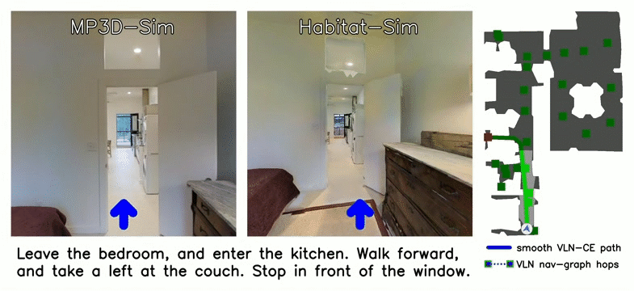
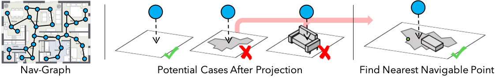
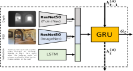
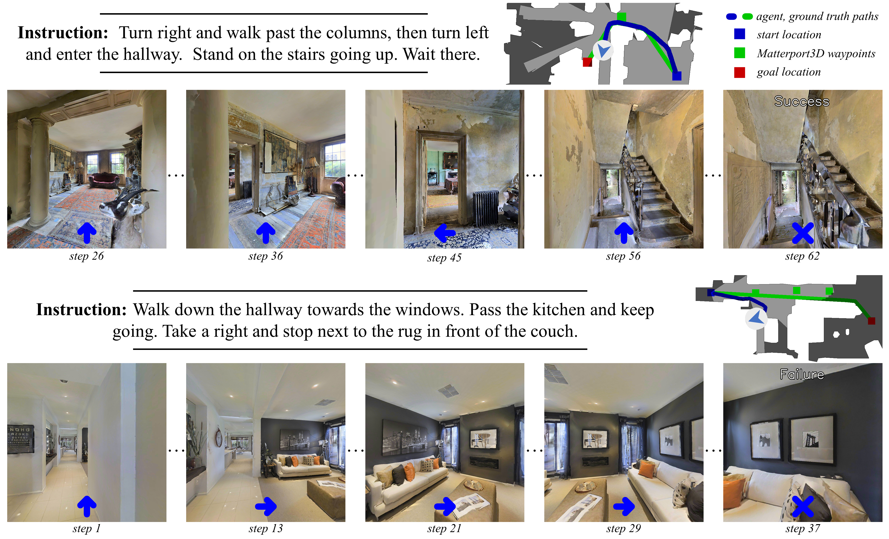

Summary
Beyond the Nav-Graph: Vision-and-Language Navigation in Continuous Environments
- 核心: 把 R2R / VLN 从离散 nav-graph teleport 提升到 Habitat 中的连续低层动作空间, 同时把 R2R 7,189 条 nav-graph 轨迹移植成 4,475 条连续可达轨迹, 形成 VLN-CE benchmark, 并展示 nav-graph 假设在 VLN 性能里贡献了至少 ~25 SPL
- 方法: 把 MP3D nav-graph 节点 ray-cast 到地面 mesh 上得 waypoint, A* 验证两两可达; 4 个低层动作 (FORWARD 0.25m / TURN ±15° / STOP); 提出 Seq2Seq 与 Cross-Modal Attention (CMA) 两个 baseline + Progress Monitor / DAgger / 合成数据增强
- 结果: best CMA (PM+DA*+Aug) val-unseen 32 SR / 30 SPL (VLN-CE); 把同模型 path 反投到 nav-graph 在 VLN test 拿 24 SR / 21 SPL, 远低于同期 nav-graph SOTA Back-Translation 的 51 SR / 47 SPL —— 量化 nav-graph “暗补贴”
- Sources: paper | website | github
- Rating: 3 - Foundation（VLN-CE 的奠基论文，2024 年后几乎所有 VLN 工作 ETPNav / NaVid / NaVILA / StreamVLN / VLN-PE / Efficient-VLN / VLN-Verse 报告 VLN-CE 数字；485 citations + 782⭐ 的官方 codebase 仍是 de facto 起点）
Key Takeaways:
- “Beyond the nav-graph” 是 setup-level pivot, 不是模型贡献: 论文真正的资产是 VLN-CE benchmark 本身——把 VLN 从 “visually-guided graph search” 改成 “low-level visuomotor instruction following”, 这一步把任务难度抬高 ~2x (best SR 32 vs 同期 nav-graph 51), 并把 VLN 第一次和 robotics-style action space 接上
- 77% trajectory 可移植率是隐藏的 dataset filter: 23% 不可达不是噪声而是结构性的——MP3D mesh 有洞、家具被移动、panorama 之间人手添加的边 ray-trace 验证不过。结果 VLN-CE 的 4,475 条轨迹在分布上比原 R2R 更”干净” (更少跨 region jump), 这件事至今很少被讨论但会偏向 well-reconstructed 大房间场景
- Depth 远比 RGB 重要 (反 VLN 直觉): ablation 里 No Depth → 4% SR, No RGB → 17% SR (Tab. 2)。VLN 几乎不用 depth, 但 CE 没 depth 连避障都学不会——这是连续环境的”第一公民信号”, 直接决定了后续 ETPNav 用 depth-only waypoint predictor 等设计
- Cross-Modal Attention 必须配 trick stack 才有用: 裸 CMA 比裸 Seq2Seq 仅 +0.04 SPL; 加 Progress Monitor + DAgger + 合成数据后 +0.12 SPL。说明在长序列 (avg 88 actions) 场景下 attention 增益不再”白来”, 训练 regime 主导, 这条结论被后续 LLM-based agent 路线 (StreamVLN / NaVILA) 间接继承
- Nav-graph 反投影实验是论文最锋利的一刀: 同一个 agent 在 VLN-CE 跑 32 SR, 把 path snap 到 nav-graph 后只有 24 SR, 而同期带 nav-graph 训练的 Back-Translation 51 SR——直接给出了”nav-graph 假设值 ~25 SR”的量化证据。这是 VLN-PE / VLN-Verse 后来继续追问的 “embodied gap” 第一次被严肃定量
Teaser. R2R 离散 teleport vs VLN-CE 连续低层动作的对比 (官方 project page)

Background & Motivation
VLN (Anderson et al. 2018) 在 Matterport3D 上把任务定义为离散 nav-graph 上的 viewpoint hopping——节点是预采集的 360° panorama (每个环境约 117 个), 边是人工审过的可达性。Agent 每步从当前 panorama 选一个相邻节点, 然后瞬移过去, 平均一条轨迹只要 4-6 步。这个设定让数据收集和训练都高效, 但偷偷植入三条与真实机器人不符的假设:
- Known topology: agent 拿到完整可达图, 即使在 “unseen” split 也是。真实机器人没有这个 prior
- Oracle navigation: 节点间瞬移意味着障碍规避被外包给一个不存在的 oracle, 平均跨度 2.25m
- Perfect localization: 全程精确 pose, 大量方法 (e.g. RCM) 把节点间几何编码进决策
这三条加起来, VLN 实质退化成 “visually-guided graph search”。论文的 framing 是: 如果想让 VLN agent 真的转化为机器人能力, 必须先把这些假设拿掉, 看看现有方法剩下多少。
❓ 论文的 motivation 其实有两个 layer 没区分清楚: (1) “nav-graph 假设不真实” 是工程批评, (2) “nav-graph 性能是高估” 是经验 claim。前者是 priori 论断, 后者需要 §5.3 的反投影实验支持。后续工作 (LAW, ETPNav, NaVid) 大多只引用 layer (1) 的 framing, 但 layer (2) 的 ~25 SPL gap 才是更硬的科学贡献。
VLN-CE 任务定义
仿真平台与 Action Space
| 维度 | 设定 |
|---|---|
| Simulator | Habitat (Savva et al. ICCV 2019) on MP3D mesh |
| Embodiment | LoCoBot 风格地面机器人, 1.5m 高、0.2m 直径圆柱体 |
| Observation | 单目 forward-mounted RGB-D, 256×256, FoV 90° |
| Action space | MOVE-FORWARD 0.25m, TURN-LEFT 15°, TURN-RIGHT 15°, STOP (低层离散) |
| Pose | GT pose 在训练时可用; agent 推理时无 GPS/heading |
注意: action 仍然是离散的 (4 个原子动作), 但位移粒度从 ~2.25m teleport 降到 0.25m forward, 且会真的撞墙 / 卡家具。一条 R2R 轨迹 4-6 hops 在 VLN-CE 平均要 55.88 步, 极端长度可超 100。
Trajectory 移植: nav-graph → continuous mesh
Figure 2. Nav-graph 节点投影流程: 直投失败的 73% 改用向下 ray-cast 找最近 navigable mesh 点

直接拿 R2R 节点的 (x, y, z) 当 waypoint 不可行——很多 panorama 来自三脚架/桌面, 直接投到最近 mesh 点对 73% 的节点会失败 (>0.5m 偏移或落到不可达位置, e.g. 天花板、柜面)。论文的 fix:
- 从节点位置向下 cast 2m, 在间隔点上投到最近 mesh
- 取 horizontal displacement 最小的 navigable point
- 偏移 > 0.5m 视为 invalid; 人工复核所有 invalid 节点
- 98.3% 节点最终成功转化 (3% 需要平均 0.19m 横向调整)
然后用 A* 启发式搜索验证两两 waypoint 可达 (能走到 0.5m 内)。最终结果:
- 7,189 R2R train+val 轨迹中 77% (4,475 条) 在连续环境可达
- 23% 不可达的失败模式: 22% 包含某个 invalid 节点, 78% 是因为 reconstruction 把空间切成 disjoint region (mesh 洞、家具被移动后阻断 panorama 之间的人工添加边)
这是论文里 dataset 工程最重的部分, 后续 VLN-CE 数据规模就锁定在 ~4.5k 训练轨迹。
❓ 这个 23% drop 不是随机采样: 倾向于丢掉 “panorama 间有可疑可达性、reconstruction 又有问题” 的轨迹——大概率偏向结构复杂/家具密集/重建质量低的子集。所以 VLN-CE 的”难度” 不只比 R2R 高, 它的难度分布也偏了——R2R 上做的某些 generalization 结论在 VLN-CE 不一定 hold。论文没讨论这件事。
Baseline 模型
论文提了两个 baseline 方便后续工作做对比, 不主张方法贡献:
Figure 4. Sequence-to-Sequence baseline 与 Cross-Modal Attention 模型架构示意

Seq2Seq Baseline
最朴素的 RNN policy:
RGB 用 ImageNet-ResNet50 mean-pool, depth 用 PointGoal 预训练 ResNet50 (Wijmans et al. DD-PPO), instruction 用 GLoVE + LSTM。
Cross-Modal Attention (CMA)
两层 GRU, 第一层跟踪视觉历史, 第二层基于 attended instruction → vision/depth 做决策:
这个 CMA 直接对应当时 nav-graph VLN 的主流架构 (RCM 等), 用来回答 “nav-graph 上的 attention 范式迁移到 CE 还剩多少收益”。
训练 trick
- Inflection-weighted teacher forcing: 给 action 切换的时间步加 3.2x loss weight, 防止 GRU 学成”一直 forward”
- DAgger: 第 n 轮以概率 用 oracle action, 否则 policy action; 累积 5,000 trajectory/轮 + 4 epoch 训练 (6-10 轮收敛)
- Progress Monitor (Ma et al. ICLR’19): 辅助回归任务, 预测当前完成进度
- Synthetic augmentation (Tan et al. NAACL’19): 把 ~150k speaker-生成的 R2R 增强轨迹也移植到连续环境
关键实验结果
5.1 No-learning baseline 揭示 nav-graph 隐性 prior
Table 2 摘要 (val-unseen)
| Model | Vision | Instruction | TL ↓ | NE ↓ | OS ↑ | SR ↑ | SPL ↑ |
|---|---|---|---|---|---|---|---|
| Random (按训练动作分布) | - | - | 3.74 | 9.51 | 0.04 | 0.03 | 0.02 |
| Hand-Crafted (37 步直走) | - | - | 3.71 | 10.34 | 0.04 | 0.03 | 0.02 |
| Seq2Seq RGBD | RGBD | ✓ | 7.67 | 8.94 | 0.25 | 0.20 | 0.18 |
| – No Image | D only | ✓ | 7.87 | 9.09 | 0.23 | 0.17 | 0.15 |
| – No Depth | RGB only | ✓ | 5.54 | 9.89 | 0.11 | 0.04 | 0.04 |
| – No Vision | - | ✓ | 4.68 | 10.06 | 0.07 | 0.00 | 0.00 |
| – No Instruction | RGBD | - | 7.27 | 9.03 | 0.22 | 0.17 | 0.16 |
关键观察:
- Random/Hand-crafted 在 VLN-CE 只有 3% SR, 而同样的策略在原 nav-graph VLN 有 16.3% SR——nav-graph 自带的”边都连着 navigable 区域”的 prior 直接送你 13%。这是论文最有力的 1 个数字
- Depth 是必要条件: No Depth → SR 4% (跟 random 差不多)。No RGB → 17%, 几乎跟 No Instruction 持平。结论: agent 先要会避障再谈 grounding。直接催生了后续 ETPNav 的 depth-only waypoint predictor 设计哲学
- No Instruction 17% 与全模型 20% 仅差 3 SR: 说明 VLN-CE 早期 baseline 的 instruction grounding 信号非常弱——“按平均轨迹长度直走 + 学会避障” 已经能拿大头分数
5.2 模型与 trick 组合
Table 3 摘要 (val-unseen, SPL)
| # | Model | PM | DAgger | Aug | TL | NE | OS | SR | SPL |
|---|---|---|---|---|---|---|---|---|---|
| 1 | Seq2Seq | - | - | - | 7.67 | 8.94 | 0.25 | 0.20 | 0.18 |
| 5 | Seq2Seq | ✓ | ✓* | ✓ | 9.32 | 7.77 | 0.37 | 0.25 | 0.22 |
| 6 | CMA | - | - | - | 7.71 | 8.14 | 0.31 | 0.23 | 0.22 |
| 10 | CMA | ✓ | ✓* | ✓ | 8.64 | 7.37 | 0.40 | 0.32 | 0.30 |
| 12 | CMA | - | ✓* | ✓ | 8.27 | 7.76 | 0.37 | 0.29 | 0.26 |
(* 表示先 IL pre-train 再 DAgger fine-tune)
关键观察:
- DAgger 普遍有效 (Seq2Seq +0.05 SPL, CMA +0.03 SPL), 因为长 horizon 下 exposure bias 被严重放大
- Progress Monitor 单独用反而掉点 (-0.01–0.03 SPL); 必须配 augmentation 才能 hold 住——augmentation 提供更多样的 progress label, 缓解过拟合
- CMA 的最大收益来自 trick stack 而非架构: 裸 CMA vs 裸 Seq2Seq +0.04 SPL, 但加全套后差距拉到 +0.08 SPL。说明 attention 在长 horizon 任务下需要更好的训练信号才能体现优势
5.3 Nav-graph 反投影: 量化 “embodied gap”
Table 4 摘要 (VLN test, nav-graph 评测)
| Setting | Model | NE ↓ | SR ↑ | SPL ↑ |
|---|---|---|---|---|
| Nav-graph 训练+测 | VLN-Seq2Seq | 7.85 | 0.20 | 0.18 |
| 同上 | RCM | 6.12 | 0.43 | 0.38 |
| 同上 | Back-Translation | - | 0.51 | 0.47 |
| CE 训练, 反投到 nav-graph | CMA (PM+DA*+Aug) | 8.55 | 0.24 | 0.21 |
把同一个 CMA agent 在连续环境跑出的 path snap 到 nav-graph 节点序列, 提交 VLN leaderboard:
- 反投 SPL = 0.21, vs 同期 SOTA Back-Translation = 0.47——~26 SPL 的 gap
- 论文承认 gap 包含两类损耗: (a) ~20% trajectory 在 VLN-CE 直接不可达, agent 必败; (b) 连续 path 通过 sparse panorama 区域时反投质量差。粗估这两项加起来 ~10 SPL
- 即便扣掉这 10 SPL, 剩余 ~16 SPL 是 nav-graph 假设的纯红利
这是论文真正的科学 punchline——之前 VLN 的进步, 至少有相当部分不是 instruction-following 能力的进步, 而是 nav-graph 假设的兑现。
Figure 5. CMA agent 在 unseen 环境的成功 (上, 62 actions) 与失败 (下, 在 wrong couch 处停止) 案例

关联工作
基于
- DUET & nav-graph VLN 系列 (R2R, RCM, Back-Translation, Self-Monitoring): 论文要反对的对象, 同时也是 baseline 架构灵感来源 (CMA 直接对标 RCM)
- Habitat (Savva et al. ICCV 2019): 提供高吞吐 RGB-D simulator, 是 VLN-CE 能跑起来的工程前提
- DD-PPO (Wijmans et al. ICLR 2020): PointGoal 预训练 depth ResNet50 直接被 reused, 也奠定了 “depth-first navigation” 的工程惯例
- Matterport3D (Chang et al. 3DV 2017): 90 个 indoor 场景的 mesh + panorama, 整个 R2R/VLN-CE 都站在它上面
后续 (VLN-CE 作为 benchmark)
- ETPNav (TPAMI 2024): VLN-CE 上 topological planning + waypoint predictor 的代表 SOTA, 直接处理了本文留下的 “low-level controller 卡死” 痛点 (Tryout 机制)
- NaVid (RSS 2024): 第一个 video-VLM end-to-end 跑 VLN-CE, 完全甩开 depth/odometry, 论证 LLM scaling 路线在 VLN-CE 的可行性
- NaVILA: 双 VLM 架构 + 真机部署, 把 VLN-CE 当作中间 benchmark
- StreamVLN: streaming video VLM, 在 VLN-CE 上拿 SOTA
- VLN-R1 / ETP-R1: 把 VLN-CE 作为 RL fine-tuning 目标, 延续 R1 范式
- DyGeoVLN: 在 VLN-CE 上加几何先验
- VLNav / LH-VLN / VLN Foundation Survey: 把 VLN-CE 当 reference benchmark 引用
推进 embodiment realism (本论文的延伸 arc)
- VLN-PE (2025): 进一步把 VLN-CE 的 abstracted controller 替换成真实物理 agent, 暴露 VLN-CE 仍残留的”低层离散动作”假设
- VLN-Verse (2025): 多 embodiment + 物理仿真, 把 “beyond the nav-graph” 推到 “beyond the abstracted controller”
- Efficient-VLN (2025): 关注 VLN-CE 推理效率, 是 benchmark 成熟后才会出现的工作类型
整体看, “beyond the nav-graph” 不是终点, 而是 embodiment realism arc 的第一步。本文论证 “nav-graph 假设值 ~25 SPL”; VLN-PE / VLN-Verse 延续追问 “GT pose / abstracted controller 假设还值多少”。可见 VLN-Survey 中关于 VLN-CE 在 leaderboard 上的角色梳理。
方法相关
- DAgger (Ross et al. AISTATS 2011): imitation learning + interactive correction, 论文用来缓解长 horizon 的 exposure bias
- Progress Monitor (Ma et al. ICLR 2019): aux loss 监督 agent 估计当前完成度, 这里被发现需要配合数据增强才有效
- Speaker-Follower (Fried et al. NeurIPS 2018) / Back-Translation (Tan et al. NAACL 2019): 提供 ~150k 合成 trajectory-instruction pair, 论文直接 reuse
- nDTW (Magalhaes et al. 2019): dynamic time warping based metric, 论文采纳后成为后续 VLN-CE 通用 metric
论文点评
Strengths
- Setup-level contribution 极高: 论文最有价值的是 VLN-CE benchmark 本身——清晰的 trajectory 转换协议、可复现的 Habitat 流水线、open-source codebase + EvalAI leaderboard。从 2022 起几乎所有 VLN 工作都报告 VLN-CE 数字, 一个 benchmark 能塑造一个 sub-field 五年以上的研究节奏, 这是教科书级 Foundation
- 5.3 节的反投影实验是论证设计的典范: 把 “nav-graph 高估真实能力” 这个抽象 claim 落到 ~25 SPL gap 的具体数字。同行可以反驳 caveat (~10 SPL 的 dataset filter 损耗) 但很难否认核心 trend。这种 quantify-the-assumption 的实验范式后来被 VLN-PE / VLN-Verse 继承
- Single-modality ablation 很硬核: No Vision / No Image / No Depth / No Instruction 全做了, 直接揭示 VLN-CE 早期 baseline 的 grounding 弱点 (No Instruction 17% vs 全模型 20%)。这种诚实 ablation 在当时 VLN 论文里不常见
- 依赖 Habitat 的工程选择是对的: 高吞吐渲染让 DAgger (要 5k trajectory × 6-10 轮) 在合理时间训完, 没有这点 VLN-CE 不可能成为大家都跑得起的 benchmark
Weaknesses
- 23% trajectory 损失被严重 under-discussed: 论文在 5.3 节用 “10 SPL caveat” 一句带过, 但事实上这意味着 VLN-CE 不是 R2R 的 unbiased subsample——大概率偏向 well-reconstructed 简单场景。这件事到 2026 年仍然没有被仔细审视
- 所有”continuous”都还是离散原子动作: action space 是 4 个固定 (FORWARD 0.25m / TURN ±15° / STOP), 不是真正的连续控制。一个轮式机器人不会以这种方式执行命令——“continuous environments” 名字略微 oversell, 真正连续的是 environment representation, 不是 action
- GT pose 在训练时仍然给: 论文虽然说 “agent 推理时无 GPS/heading”, 但训练阶段 supervision 依赖准确 path——agent 本质上学到的 policy 是基于”我知道自己在哪”训出来的。这个隐性假设到 VLN-PE 才被认真挑战
- Baseline 弱到几乎不能算 strong evidence for nav-graph effect: best 模型 32 SR, 跟同期 nav-graph SOTA 51 SR 比, 部分 gap 也可能来自架构/训练资源差距而不是 nav-graph prior 本身。理想的反事实是”同样架构 + 训练 budget 下 nav-graph vs CE 的差异”, 论文没做
- Instructions 是 R2R 直接复用: R2R 的 instruction 是写给 nav-graph 上 4-6 hop 路径的, 在 55 步连续 trajectory 上颗粒度严重不匹配 (“turn left, and enter the hallway” 在 CE 里 “left” 要 turn 几次?)。论文承认这点 (qualitative 5) 但没去重新众包 CE-friendly instructions——后来的 RxR + RxR-CE 弥补了这一缺口
可信评估
Artifact 可获取性
- 代码: inference + training, github.com/jacobkrantz/VLN-CE, 782⭐ + MIT license, 支持 VLN-CE 与 RxR-CE 两个 dataset
- 模型权重: README 提供 Seq2Seq 与 CMA baseline checkpoint 下载
- 训练细节: 完整 (Adam lr=2.5e-4, batch=5 trajectories, inflection weight=3.2, DAgger β=0.75^n, 5k trajectory/轮, 4 epoch/轮, 6-10 轮收敛)
- 数据集: 开源 (VLN-CE = 4,475 trajectories from R2R train+val splits + ~150k synthetic augmentation, 通过 Matterport3D license 获取)
Claim 可验证性
- ✅ R2R 的 77% 可移植到连续环境: 直接由数据集统计可验证, 后续多个工作复现
- ✅ Depth 是 VLN-CE 的关键信号: ablation Tab. 2 + 后续 ETPNav / Sim2Sim 多个 follow-up 一致复现
- ✅ CMA + 全 trick 在 val-unseen 拿 30 SPL: 公开 codebase 可复现, EvalAI leaderboard 上多次被 reproduce
- ✅ 同 agent 反投到 nav-graph 拿 21 SPL, 远低于 nav-graph 训练的 47 SPL: VLN test leaderboard 数字可查
- ⚠️ “~25 SPL gap = nav-graph 假设的红利”: 包含 ~10 SPL 的 dataset filter 损耗 (论文自己 caveat); 严格分离 architecture/training-budget vs nav-graph prior 的两类贡献需要更控制的实验, 论文没做
- ⚠️ “VLN-CE 是更接近真实机器人的设定”: 仍然依赖 GT pose, abstracted controller, 离散 atomic actions, 90 MP3D scenes 都是 static——比 nav-graph 接近真实, 但远不是 ground truth realism (这个 claim 后来被 VLN-PE 用更严格的 setup 部分反驳)
Notes
-
VLN-CE 至今未脱开的 5 个假设, 写在这里作为后续阅读 anchor:
- MP3D 90 scenes 上限: 数据规模封顶, 大模型时代显得严重不足 (NaVILA / StreamVLN 都补充 web video / 跨数据集 co-train)
- GT pose 在训练 supervision 中可用, 推理阶段 odometry 也通常默认完美
- No dynamic obstacles: 场景里没有人/动物/移动家具
- Abstracted low-level controller: 4 个原子动作不等于真机控制——FORWARD 0.25m 默认成功, 没有滑动/碰撞物理
- VLN-CE 是 R2R 的 biased subset (77% 可达率), 偏向 reconstruction 质量好的场景
-
这篇论文真正的思考价值不在它的方法, 而在它”问对了 problem formulation”。VLN 社区如果一直在 nav-graph 上做下去, 大概率走向 over-engineering 在一个极度 abstract 的玩具任务上, 这篇论文把战场拽回 embodied 这边, 才有 2024-2026 年 LLM-based VLN-CE 的爆发
-
❓ 一个开放问题: 既然 5.3 节论证了 “nav-graph 高估了 ~25 SPL”, 那 VLN-CE 上 2024 年 SOTA (NaVILA / StreamVLN ~70 SR) 是不是又把 VLN-CE 的某个隐性假设用到极致了? 如果把 VLN-CE 上的 SOTA agent 放到 VLN-PE 物理 agent 设定下, 还剩多少 SR? 这是 VLN-PE 在追的问题
Rating
Metrics (as of 2026-04-28): citation=485, influential=105 (21.6%), velocity=6.7/mo; HF upvotes=N/A (paper page 在 HF 上没创建); github 782⭐ / forks=82 / 90d commits=0 / pushed 477d ago · stale
分数: 3 - Foundation
理由: 这是 VLN-CE 的奠基论文, 不是因为方法有突破 (CMA 32 SR 早被超过几十个百分点), 而是因为它定义了一个 sub-field 用 6 年的 benchmark 和 problem formulation。485 citations + 21.6% influential ratio (远高于典型 ~10%, 说明大量后续工作实质性继承了它的 task setup 而非只 cite 一下) + 几乎所有 VLN 现代工作 (ETPNav / NaVid / NaVILA / StreamVLN / VLN-PE / Efficient-VLN / VLN-Verse) 都在 VLN-CE 上报数, 满足 Foundation rubric 中的 “已成为方向的 de facto 标准评测”。github stale (1.3 年没更新) 不影响——benchmark 类工作的影响力靠 dataset/protocol 沉淀, 不靠 codebase 持续维护。不打 2 - Frontier 是因为它早已超越”前沿”的范畴, 是 VLN-CE 方向的入门必读。